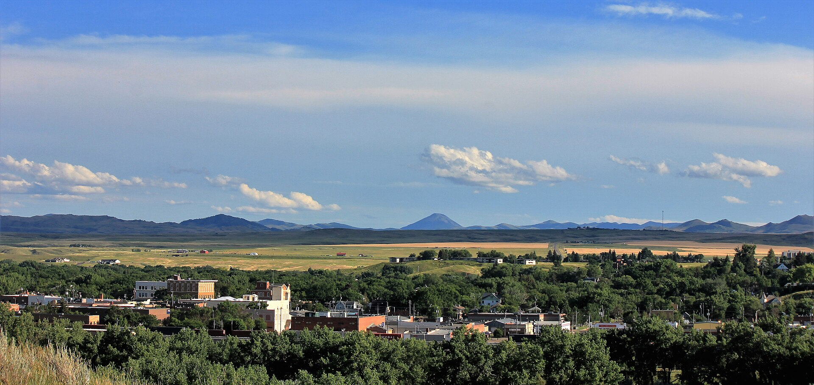

Welcome to Havre - The Crown Jewel of the Hi-Line
Havre is the county seat and largest city in Hill County Montana. It is located just 138 miles south of the Canadian border. Havre was platted south of the railroad tracks on parts of Descelles’ and Simon Pepin’s ranches and like many railroad towns, it is laid out in a grid formation. Havre was originally called Bullhook Bottoms but was later renamed Havre after Le Havre in France.
